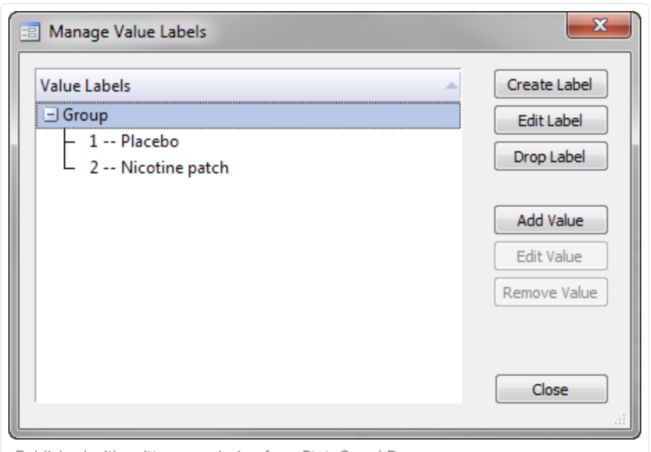
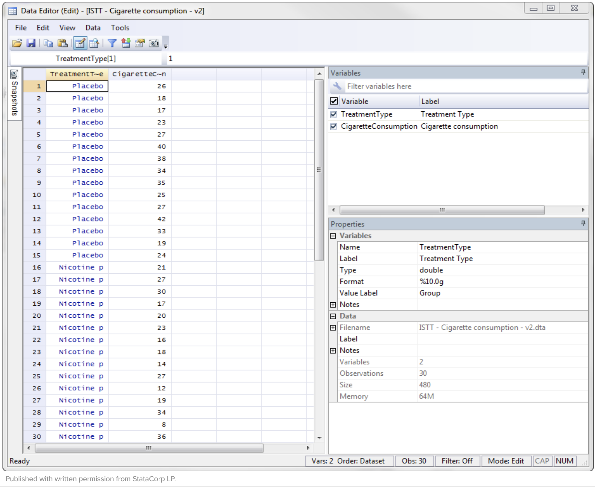
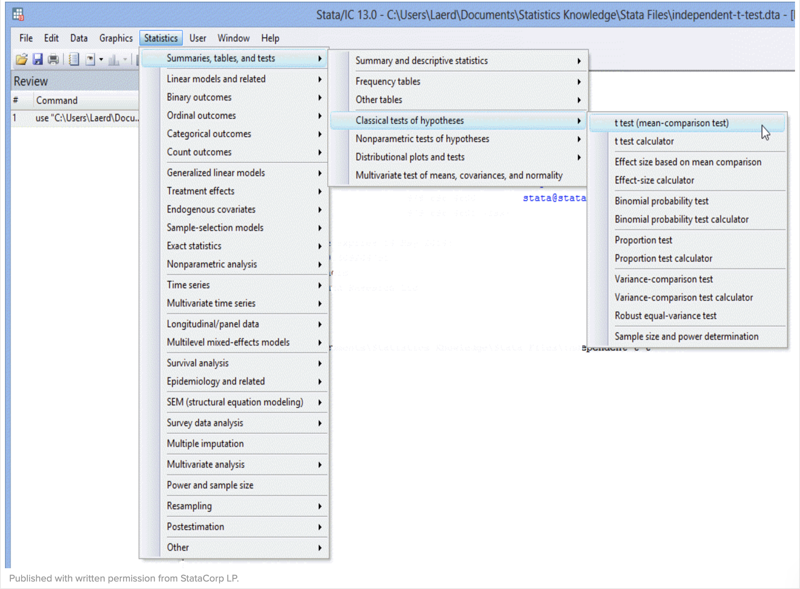
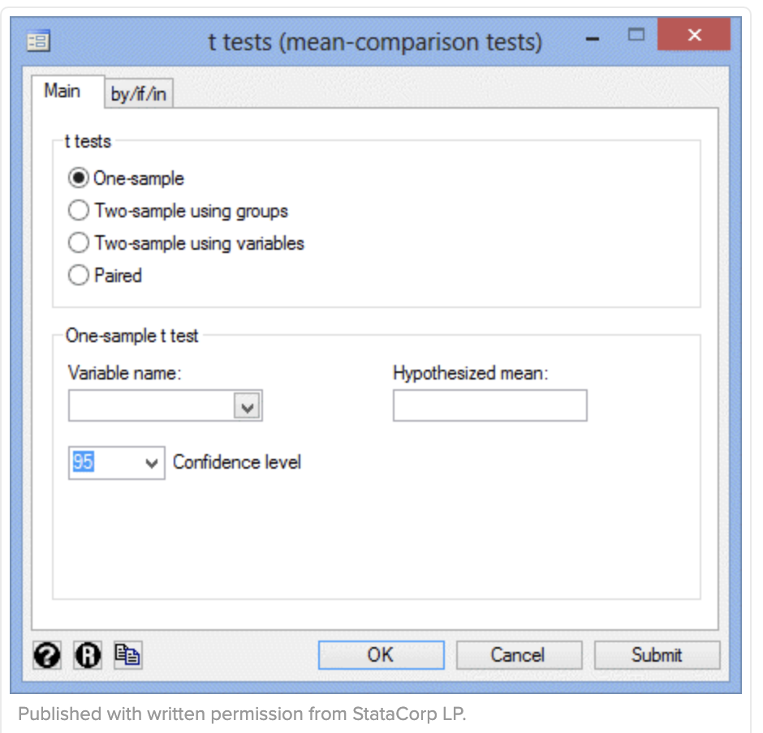
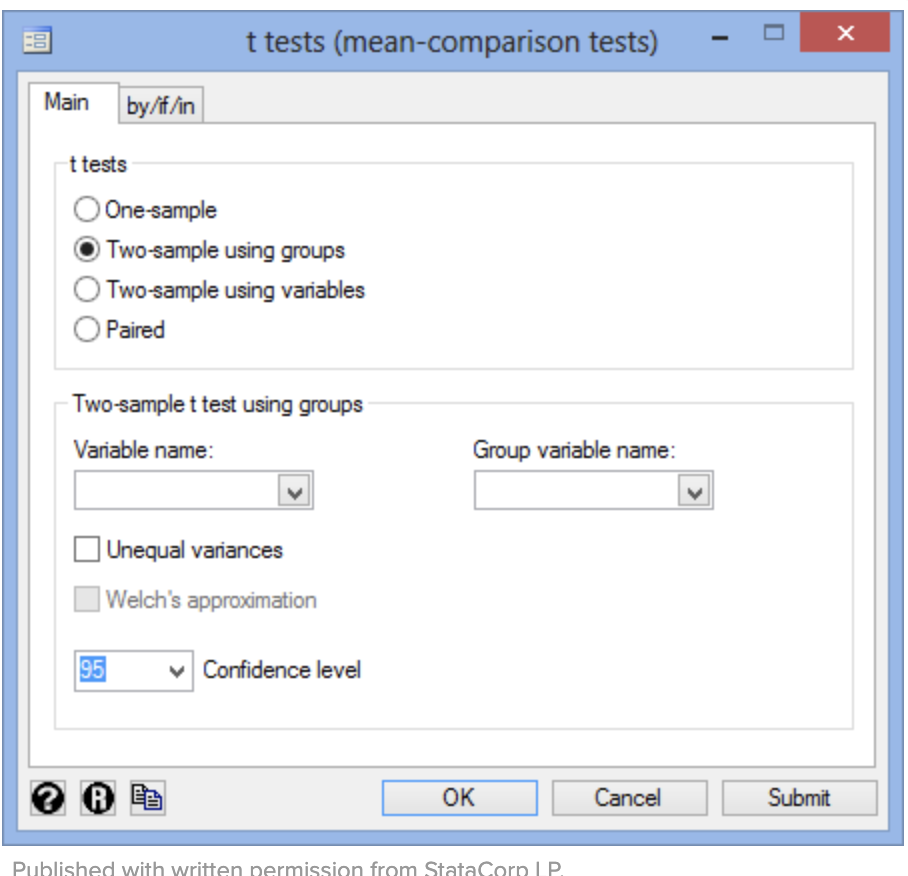
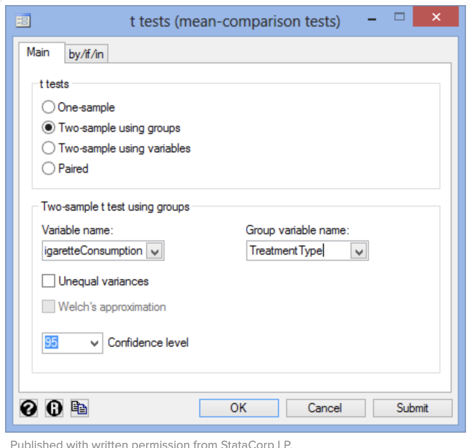
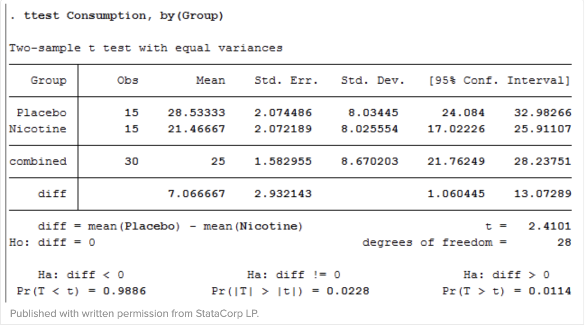

Independent T-Test
Independent T-Test is a statistical methods that helps us to compare the means of two sets of data. It helps to compare whether the two groups have different average values. For instant whether men and women have different average heights. Keep in mind that this test can only be used for only two groups, interventions or change scores.
Assumptions
- Assumption: The dependent variable should be continous. Such as height, temperature, salary, revision time, intelligence (measured in using IQ score), reaction time, test, sales etc.. are measurable at the interval or ratio level. For me help you can see more Types of Variables here statistic.laerd.com
- Assumption: The independent variable should consists of two categorial, 'unrelated groups'. For example: gender group: male and female; religious(2 groups:yes or no).
- Assumption: There should not be a an outlier which means that an outlier is a single data point within your data that does not follow the usual pattern. These outliers can have a negative impact on the independent t-test and reduce the accuracy of the final result.
- Assumption: You should have independence of observations. It means there should not be a relationship between the groups themselves.
- Assumption: The dependent variable should be approx. normally distributed for each category of the independent variable.
Example
The researcher want to find out whether the use of nicotine patches reduces cigarette consumption. If it is the case by how much it would be. The researcher is working for the government who wants to find a solution for heavy smokers struggling to quit. In order for that 30 heavy smokers participate in this project. The smoker is defined as a person who smokes an average of 40 cigarettes or more per day. These people are then split in two 2 independent groups, one 'control group' the other 'treatment group'. To prevent a 'placebo' both party were given patches, but just one group got the one with the nicotine. The experiment takes 3 months. Then the two was measured in terms of the average number of cigarettes smoked per day. The dependent variable was ' cigarettes consumption' (number of smoked cigarettes at the end of the experiemnt) and the independent variable 'treatment type', where there were two independent groups (the treatment and control group)
Setup in Stata
In order to use stata follow the site below to download/purchase stata:
https://www.stata.com/order/download-details/
Now we separate two groups by creating a grouping variable TreatmentType: The control group who received the placebo '1-- Placebo' The treatment group who received the nicotine patches a value of ' 2—Nicotine patch'

Then enter the scores for cigarettesConsumption in the column to the right of the TreatmentType into the Data Editor (Edit) spreadsheet

Test the procedure in Stata: If in the previous section the Assumptions have not been violated. We gonna cary out the test using Stata's graphical user interface(GUI).
In Stata Version 13 all you need to do is click Statistics >Summaries,tables,and tests > Classical tests of hypotheses > t test (mean-comparison on the top menu, as shown below.

You will see the t tests(mean-comparison tests) dialogue box:

Choose Two-sample using groups option in the -t-tests- area:

Now choose the dependent variable, CigarettesConsumption from the Variable name : dropdown box. And choose TreatmentType from the Group variable name drop-down box.

Next click on enter
Output

In the output you can see the two compared groups, the standard and mean deviation but also the actual results from the independent t-test. The groups means are significantly different as the pvalue in the Pr ( (|T| > |t|) ) row is less than 0.05. Take a look st the Mean column it is seen that the people who used th nicotine patches had lower cigarette consumption at the end of the experiment than the one without nicotine.
Interpretation
Please keep the following in mind:
- An introduction to the analysis
- The mean and standard deviation for your two unrelated groups
- The information about your sample, including how many participants there were in each group
- The observed t-value (t), degress of freedom, significance level( p-value: Pr ( (|T| > |t|) )
In the end it could look like this:
The researchers conducted a independent t-test with a sample of 30 heavy smokers in order to find out whether there were difference in cigarettes consumption based on treatment type. There were the control group with the placebo patches and the treatment group with the nicotine patches. Both groups were equally and randomly divided. The results showed that participants given nicotine patches had statistically significantly lower cigarette consumption (21.47 ± 2.07 cigarettes) at the end of the experiment than participants given the placebo (28.53 ± 2.07 cigarettes), t(28) = 2.410, p = 0.023.
Sources
http://docs.statwing.com/examples-and-definitions/t-test/
https://statistics.laerd.com/stata-tutorials/independent-t-test-using-stata.php
https://libguides.library.kent.edu/SPSS/IndependentTTest